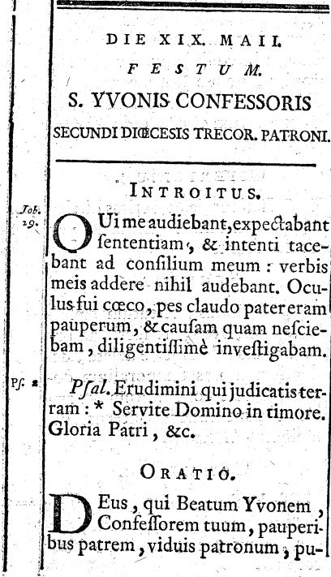
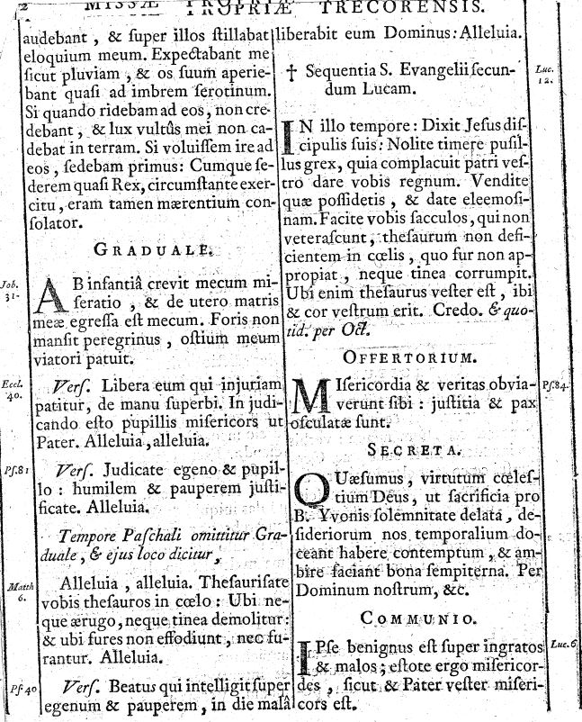
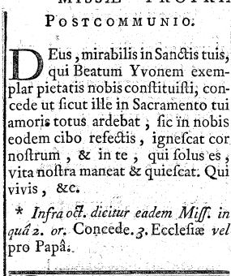
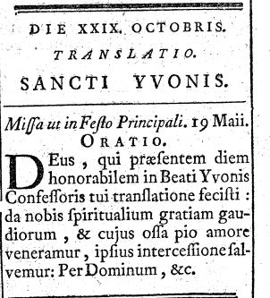
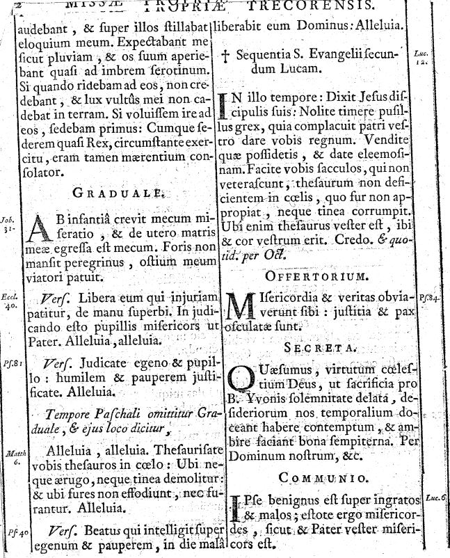
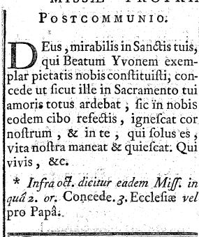
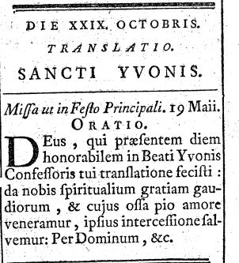

Table des matières
Structure générale du fascicule 3
Saints bretons et identité diocésaine 4
Spiritualité et accents théologiques 5
Organisation du temps liturgique 6
L’oratio de sainte Geneviève 10
La messe de la bienheureuse Jeanne de Valois 11
L’office de la canonisation de saint Guillaume 19
La messe de la Translation des reliques de saint Brieuc 22
La messe de l’Invention du corps de saint Étienne 24
L'oratio de saint Maclovius 28
L’office de la canonisation de saint Guillaume 34
Le Kalendarium perpetuum du Missale Romanum briochin 40
Analyse transversale des pièces 42
Document : parties du propre de Tréguier concernant Saint-Yves au 18ème siècle. 51
Imprimatur :
Le Très Révérend Seigneur Augustin David, Évêque de Saint-Brieuc, afin de satisfaire aux vœux du Clergé et du Peuple de son diocèse qui souhaitent voir rétablis les anciens privilèges concernant les fêtes dudit Saint Yves, a humblement demandé à Notre Très Saint Père le Pape Pie IX ce qui suit :
-
Qu’à l'avenir, dans tout le diocèse, le 19 mai, la fête dudit Saint soit célébrée sous le rite double de deuxième classe, avec octave, ainsi qu'avec l'Office et la Messe autrefois en usage.
-
Que le dimanche dans l'octave, afin de favoriser la dévotion du peuple, la solennité dudit Saint soit célébrée comme on a l'habitude de le faire pour les Patrons. Cependant, les années où ce dimanche coïncide avec la Pentecôte, la Très Sainte Trinité ou la Fête-Dieu, la solennité de Saint Yves pourra être célébrée le dimanche dans l'octave de l'Ascension de Notre Seigneur Jésus-Christ, en respectant l’Indult de l'Éminentissime Cardinal Caprara, Légat a latere en France, concernant le transfert de la solennité des Patrons.
-
Que le 29 octobre, la fête de la Translation des Reliques de Saint Yves soit observée avec le rite Double Majeur dans tout le diocèse ; mais dans la Cathédrale de Tréguier, où le Chef (le crâne) dudit Saint est pieusement conservé, et dans les églises qui lui sont annexées, elle soit célébrée sous le rite double de deuxième classe, avec l'Office et la Messe présentés par le secrétaire soussigné de la Sacrée Congrégation des Rites, sous réserve d’une révision préalable des Offices et des Messes.
Sa Sainteté, sur le rapport du secrétaire de la Sacrée Congrégation des Rites, a daigné accorder favorablement ces demandes par une grâce spéciale.
Une fois cette révision effectuée par moi, Cardinal soussigné, Préfet de ladite Sacrée Congrégation, ainsi que par le Promoteur de la Sainte Foi et l'Assesseur de la Congrégation, Sa Sainteté a gracieusement autorisé que les Offices et Messes susmentionnés, corrigés et amendés, puissent être utilisés pour la fête et l'octave de Saint Yves, ainsi que pour la fête de la Translation de ses Reliques. Nonobstant toute disposition contraire.
Le 3 juin 1875.
C. Évêque d'Ostie et de Velletri, CARDINAL PATRIZI, Préfet de la S.R.C. Placido Ralli, Secrétaire de la S.R.C.
Structure générale du fascicule
Première partie : « Officia propria Sanctorum civitatis ac integræ Briocensis Diœcesis », (Offices propres des Saints de la ville et du diocèse intégral de Saint-Brieuc) donnant les oraisons, secrètes, postcommunions1, parfois lectures et évangiles propres pour les saints locaux et quelques fêtes générales.
Deuxième partie : « Kalendarium perpetuum » du diocèse, avec indication détaillée du rang (duplex, duplex majus, 2ᵉ classe, octaves, vigiles2) et insertion des fêtes locales dans le cycle romain.
L’ensemble est étroitement articulé avec le Missale Romanum : très souvent la messe est « de Communi3 » avec seulement l’oraison propre, et renvoi « ad calcem Missalis Romani » pour les formulaires universels (Nomen Jesu, Desponsatio BMV, SS. Corde, etc.)4.
Saints bretons et identité diocésaine
On voit très nettement la construction d’une identité spirituelle briochine et bretonne.
Évêques et patrons locaux : Tugdual (1ᵉʳ décembre), Corentin (12 décembre), Brieuc (fête principale, IIᵉ dim. après Pâques, et fête de translation, 18 octobre), Paterne (16 avril), Samson (28 juillet), Magloire (22 ou 24 juillet selon rubrique), Melanius, Maclovius, Clarus,5 etc.
La cathédrale est placée sous le titre de saint Étienne, avec la solennité de l’Inventio corporis S. Stephani, Protomartyris6, comme titulaire, célébrée le 3 août avec octave solennelle à la cathédrale et étendue au diocèse.
On note aussi un réseau de figures féminines (Genovefa, Osmanæ, Jeanne de Chantal, Jeanne Valesiæ, etc.)7 qui colorent le propre d’une spiritualité de virginité et de charité active.
Spiritualité et accents théologiques
Les textes révèlent plusieurs traits théologiques caractéristiques.
Accent pastoral : les oraisons des pontifes bretons (Brieuc, Paterne, Guillaume, Samson, Mélanius, Maclovius) insistent sur le pasteur chargé de « pascere gregem », (paître le troupeau) sur la fidélité à la doctrine et l’imitation des vertus du saint évêque, dans un contexte de restauration post-révolutionnaire.
Dimension sociale de la charité : particulièrement dans le propre de saint Yves (19 mai et translation du 29 octobre), fortement centré sur la défense des pauvres, la justice, l’aumône, et une ecclésiologie où la miséricorde envers l’indigent est médiation du salut.
Christologie de la Passion et de l’Eucharistie : suite à l’indult romain8, la série des vendredis de Carême (Spinea Corona, Lancea et Clavi, Sindon, Quinque Vulnera, Pretiosissimus Sanguis)9 manifeste la piété ultramontaine du XIXᵉ siècle autour des « mysteria Passionis ».
Mariologie : nombreuses fêtes mariales (Desponsatio BMV, Purificatio, Annuntiatio, Assumptio, Immaculata Conceptio avec octave, Patrocinium, Puritas, Nomen BMV, Septem Dolores, SS. Rosarium, etc.)10, certaines en dépendance directe des décrets romains récents.
Organisation du temps liturgique
Le Kalendarium briocense montre la manière dont le diocèse harmonise Rome et la mémoire locale.
Intégration complète du calendrier romain tridentin11 : grandes fêtes du Seigneur, de la Vierge, des Apôtres, et des grands docteurs (Thomas d’Aquin, Bonaventure, Bernard, etc.), avec valeurs de classes conformes à l’évolution du XVIIIᵉ–XIXᵉ siècle.
Insertion des propres diocésains avec rang relativement élevé : Brieuc comme « patronus præcipuus » (Patron principal) avec fête de 1ʳᵉ classe à octave, Guillaume comme patron secondaire avec octave, saint Yves comme confessorius de grande solennité (2ᵉ classe avec octave) après le rescrit de 187512.
Usage des dimanches « infra octavam » pour célébrer solennellement les patrons (Brieuc, Guillaume, Yves), avec recours explicite à l’indult Caprara13 pour la translation des patrona.
La fête de saint Tugdual
Elle se concentre dans l’oratio14 sur une dynamique de sujétion cordiale et de purification des désirs, qui dessine une figure épiscopale essentiellement ordonnée à la charité. Le texte demande à Dieu de rendre les famuli tui — « tes serviteurs » — toto corde subjecti — « soumis de tout leur cœur » —, intercedente beato Tugdualdo Confessore tuo atque Pontifice — « par l’intercession du bienheureux Tugdual, ton confesseur et pontife » —, et de les repleri spiritu caritatis — « remplir de l’esprit de charité » — afin qu’ils soient purifiés des terrenae cupiditates — « convoitises terrestres » — et parviennent à la gloire de la béatitude céleste. Le noyau théologique est double : d’une part, la subjectio cordis (soumission du cœur), qui ne relève pas d’un simple formalisme disciplinaire, mais d’un acte intérieur de dépendance aimante ; d’autre part, la caritas comme principe de purification des cupiditates et comme force motrice vers la béatitude. L’intercession de Tugdual n’est pas seulement présentée comme efficace pour obtenir des grâces particulières, mais comme médiation pour une configuration intérieure du peuple à la charité, ce qui laisse deviner, derrière la sobriété de la formule, la mémoire d’un pasteur dont la sainteté fut perçue comme exemplaire en matière de détachement et de gouvernement spirituel. La structure de l’oraison relie directement la grâce de la charité à la conversion des désirs terrestres, sans mention explicite d’ascèse ou de pénitence, comme si le mouvement de l’amour, reçu du Saint-Esprit, suffisait à expliquer l’itinéraire de Tugdual et de ceux qui le suivent.
L’oratio de saint Corentin
Un autre évêque breton, met davantage en avant la dimension pastorale et gouvernementale de l’épiscopat, mais dans une perspective très typiquement post-tridentine. Dieu y est invoqué comme celui qui populo suo indulgentia consulit et amore dominatur — « pourvoit à son peuple par sa miséricorde et règne par son amour » — et qui, pour gouverner ce peuple, vicarios caritatis tuae, praeficis ministros — « établit des ministres comme vicaires de sa charité » ; il est demandé, par l’intercession du beatus Corentinus Confessor tuus atque Pontifex — « bienheureux Corentin, ton confesseur et pontife » —, que ceux qui président à l’Église abondent toujours plus en spiritu sapientiae et gratiae — « l’esprit de sagesse et de grâce ». Cette formule, d’une remarquable densité, propose une ecclésiologie haute de la charge épiscopale. Dieu gouverne son peuple non seulement par sa puissance, mais par son amor, et les ministres ne sont pas d’abord des délégués de son autorité juridique, mais des vicarii caritatis, des représentants de son amour. La théologie implicite de la succession apostolique prend ici un accent affectif et pastoral : l’évêque, à la suite de Corentin, se comprend comme visage local de la charité divine, et non simplement comme détenteur d’un pouvoir. Le binôme sapientia et gratia souligne que cet exercice de la charité pastorale ne peut être réduit à une simple bienveillance : il suppose à la fois discernement doctrinal et don gratuit de Dieu, ce qui renvoie au contexte historique d’une Église bretonne soucieuse d’orthodoxie et de réforme intérieure au XIXᵉ siècle. L’oratio articule donc mémoire hagiographique et exhortation implicite à l’épiscopat contemporain : Corentin, figure ancienne, devient type de l’évêque moderne appelé à être vraiment « vicaire de la charité ».
L’oratio de sainte Geneviève
Cette oratio enfin, se distingue par son accent sur la connaissance et l’amour de Dieu, et sur l’imitation sédula — « soigneuse, assidue » — de la sainte. Dieu y est prié de effundere super nos spiritum agnitionis et dilectionis tuae — « répandre sur nous l’esprit de ta connaissance et de ton amour » —, quo ancillam tuam Genovefam replevisti — « dont tu as comblé ta servante Geneviève » —, afin que, par la sedula imitatio — « imitation soigneuse » — de cette servante, les fidèles, tibi sincere obsequentes — « te servant avec sincérité » —, puissent lui plaire fide et opere — « par la foi et par les œuvres ». Le parallélisme agnitio–dilectio (la reconnaissance – l'amour de prédilection) donne à la figure de Geneviève une dimension à la fois contemplative et active : la sainte n’est pas seulement modèle de piété affective ou de courage civique, mais de connaissance aimante de Dieu, enracinée dans un don de l’Esprit. Le vocabulaire de l’ancilla tua (ta servante) et de l’obsequium sincerum (l’hommage sincère) la situe dans la lignée des grandes vierges urbaines, profondément impliquées dans la vie de la cité et pourtant tout entières livrées au service divin ; mais la mention explicite de la sedula imitatio accentue la dimension éducative de son culte, en faisant d’elle un modèle à suivre avec soin, presque méthodiquement. La conclusion, fide et opere placere — « plaire à Dieu par la foi et par les œuvres » —, reconduit à un binôme classique de la théologie post-tridentine : la foi, reçue comme lumière intérieure, et les œuvres, fruits visibles de la charité, s’unissent pour rendre l’existence agréable à Dieu. Geneviève apparaît ainsi comme une figure de synthèse entre la tradition des vierges martiales protectrices des villes et une spiritualité plus intérieure, centrée sur la connaissance aimante de Dieu et sur la cohérence entre foi et praxis.
Si l’on lit ces trois oraisons ensemble, dans l’ordre du missel, se dessine une sorte de triptyque de la sainteté bretonne (même si Geneviève est parisienne et non bretonne), où se répondent trois axes théologiques complémentaires. Tugdual représente la purification des désirs par la charité et la sujétion cordiale à Dieu ; Corentin incarne la charité pastorale comme principe de gouvernement et de sagesse pour l’Église ; Geneviève manifeste la connaissance aimante de Dieu qui se traduit par un service sincère et une cohérence entre foi et œuvres. La langue liturgique, très sobre, ne multiplie pas les traits pittoresques, mais condense dans quelques syntagmes denses l’essentiel d’une mémoire spirituelle régionale en train de s’harmoniser avec la théologie romaine du ministère et de la sainteté au XIXᵉ siècle.
La messe de la bienheureuse Jeanne de Valois
La messe de Jeanne de Valois, veuve, célébrée le 6 février, expose dans son oraison seule une vision remarquable du rapport entre l'imitation mariale, la virginité de cœur et la communion des saintes : Dieu y est invoqué pour avoir institué « per beatum Joannam, novum sacrarum Virginum coetum » — « par la bienheureuse Jeanne, un nouvel ensemble de vierges sacrées » —, en vue que les fidèles, « per eandem » — « par la même » —, gradiant « virtutum exempla » — « marchent selon les exemples de vertus ». La formule est théologiquement dense, car elle ne dit pas que Jeanne de Valois a fondé une congrégation de vierges au sens strict, mais que Dieu, par elle, a institué un nouvel ordre de vierges consacrées (c'est-à-dire les Vierges du Calvaire), ce qui place la sainteté de la veuve en continuité avec le propre de la virginité mariale et apostolique. L'adjectif « novum » — « nouveau » — indique un renouvellement de l'idéal virginal, non limité à des célibataires mais ouvert à celles qui, ayant cessé d'être épouses, se consacrent au Christ dans une forme nouvelle de vie religieuse ; cette réalité de « nouvelles vierges » suggère une théologie de la continence post-maritale ou de la rededicatio — « redédication » — consécutive au décès du mari, motif particulièrement breton et médiéval. L'oraison demande donc que les fidèles « per eandem gradiamur virtutum exempla » — « par elle, nous marchions à la suite des exemples de vertu » —, ce qui signifie marcher sur les traces des exemples de vertu que Jeanne elle-même a incarnés et transmis aux vierges du Calvaire, ce qui en ferait une figure de transmission spirituelle, une mère spirituelle en quelque sorte, plutôt qu'une simple martyre ou confesseur. La théologie implicite esquisse un chemin ascétique où la veuve est valorisée comme état capable d'une sainteté particulière, non par dérogation, mais par grâce spéciale, et son culte devient occasion pour les femmes mariées de contempler la possibilité d'une rededicatio totale après le décès du mari ou au terme du mariage, en imitation du détachement de Jeanne.
Saint Paterne
Evêque et confesseur fêté le 16 avril, Saint Paterne est présenté dans son oraison comme celui que Dieu « patrem et prudentem dispensatorem super familiam tuam constituisti » — « tu as établi comme père et prudent dispensateur sur ta famille ». Cette désignation encadre le personnage dans une doublet essentiellement familial : Paterne n'est pas d'abord un thaumaturge ou un martyr, mais un pater — « père » — et un dispensator — « intendant, administrateur » — de la familia Dei — « la famille de Dieu », la maisonnée ecclésiale. L'oraison demande que les fidèles, « ex ejus imitatione » — « par son imitation » —, multiplient « talenta nobis credita fideliter » — « fidèlement les talents qui nous ont été confiés », ce qui établit un parallèle explicite avec la parabole des talents du Nouveau Testament et la vie de Paterne elle-même ; on demande d'entrer « in promissum gaudium Domini nostri feliciter » — « heureusement dans la joie promise de notre Seigneur ». La théologie sous-jacente vise à faire de Paterne un exemple de gestion fidèle des charismes reçus, de gouvernement pastoral basé sur la prudence (prudens — « sage, prudent ») et l'affection paternelle, et de multiplication des dons par usage, non par accumulation ou avarice. Le contexte religieux évoque un évêque qui, loin de s'approprier le pouvoir, le comprend comme intendance temporaire d'une richesse qui n'est pas sienne, mais confiée par Dieu ; cette insistance sur la fidelitas dans la gestion renvoie implicitement aux controverses médiévales et modernes sur la simonie et la corruption du clergé, et fait de Paterne un modèle de probité épiscopale, particulièrement important pour un diocèse sortant de la Révolution française et soucieux de restaurer la crédibilité morale des ministres.
Saint Magloire
Evêque et confesseur fêté le 22 juillet, Saint Magloire reçoit une oraison très concentrée et dense, qui demande à Dieu que « sancti Maglorii Pontificis intercessio beata » — « la bienheureuse intercession du pontife saint Magloire » — « misericordiam tuam nobis conciliet » — « nous obtienne ta miséricorde », afin que ceux « qui incessabili culpa offendimus » — « que nous offensons par une faute incessante » — soient « ab omni reatu » — « délivrés de toute culpabilité » — par les « assiduis precibus » — « prières assidues » — du saint. Cette formule est remarquable par son accent sur la culpabilité habituelle — incessabili culpa — « faute continuelle », structure permanente de la condition humaine —, et sur la médiation intercédente du saint comme remède à cette misère. Magloire n'est pas présenté par une vertu cardinale, mais par sa fonction de mediator ou reconciliator — « médiateur, réconciliateur » ; sa sainteté est définie moins par un acte extraordinaire que par une prière perpétuelle qui ne cesse de ramener la miséricorde de Dieu sur le peuple tourmenté par la faute. La mention des assidui preces — « prières assidues » — renforce cette image d'une prière incessante, presque monastique, qui caractérise la sainteté du confesseur-évêque après sa mort : Magloire devient une figure de l'avocat pénitentiel, dont la fonction céleste résume en quelque sorte celle du père spirituel sur terre. La théologie révélée est celle d'un combat perpétuel contre le péché, où seule l'intercession du saint, ancrée dans la miséricorde divine, offre une issue ; cela résonne avec la piété post-tridentine, fortement centrée sur la confession, la pénitence et la médiation des saints comme moyen de rédemption personnelle dans une perspective de salut individuel.
Ces trois saints – Jeanne de Valois, Paterne et Magloire – forment un triptyque distinct de celui des épiscopologues15 majeurs (Tugdual, Corentin, Brieuc, Guillaume). Jeanne incarne la nouvelle création d'un ordre de vierges, Paterne la gestion prudente et fidèle des charismes confiés, Magloire la médiation intercédente perpétuelle face à la misère habituelle de l'humanité pécheresse. Ensemble, ils offrent une palette complète d'une spiritualité diocésaine post-révolutionnaire, conjuguant renouvellement du monachisme féminin, restauration de l'intégrité pastorale, et recours à la médiation céleste comme ressource fondamentale de salut. Le fait que ces trois oraisons soient très courtes – formulées en peu de propositions, sans énumération de mérites ou d'hyperboles – témoigne d'une économie rhétorique typique du XIXᵉ siècle ultramontain : la sainteté se dit par la densité du sens, non par la profusion des mots.
L’office de saint Yves,
Tel qu’il apparaît dans le propre briocain du Missale Romanum — « Missel romain » — de 1851, il se laisse lire comme une cristallisation liturgique d’une figure sacerdotale et juridique dont la sainteté consiste à tenir ensemble justice, miséricorde et pauvreté évangélique. La philologie des oraisons manifeste une sobriété rhétorique et un choix lexical très signifiant, où l’on perçoit la tension entre les catégories du droit et celles de la charité, transposées dans le langage classique de la liturgie romaine.
L’oraison principale de la fête de saint Yves le désigne comme insignem ministrum — « un ministre éminent / remarquable » — donné par Dieu ad animarum salutem et pauperum defensionem — « pour le salut des âmes et la défense des pauvres ». La structure de la phrase est binaire, mais les deux membres ne sont pas symétriques, et c’est déjà théologiquement décisif. D’un côté, salus animarum — « le salut des âmes » —, sommet de la finalité ecclésiale, résonne comme un quasi-écho du canon juridique traditionnel selon lequel salus animarum suprema lex — « le salut des âmes est la loi suprême » ; de l’autre, pauperum defensio — « la défense des pauvres » — vient occuper une place inhabituellement haute, non pas comme simple conséquence morale, mais comme co-finalité explicite du ministère d’Yves. L’adjectif insignis — « remarquable, éminent » — qualifie le minister — « ministre » —, et non la seule sphère d’activité ; saint Yves n’est pas seulement célèbre par l’ampleur de ses œuvres, mais caractérisé dans son être ministériel même par une forme de singularité exemplaire. La théologie implicite est claire : le ministère ordonné, en ce cas, est défini par la conjugalité du salut des âmes et de la défense juridique des pauvres, ce qui singularise fortement l’office dans l’ensemble du Commun des confesseurs, où la mention des pauperes — « les pauvres » — est fréquente, mais rarement configurante à ce point de l’identité du saint.
La seconde partie de l’oraison demande : praesta, quaesumus, ut… — « accorde, nous t’en supplions, que… » — ejusdem nos tribuas et caritatem imitari, et apud te patrociniis communiri — « que tu nous accordes à la fois d’imiter sa charité et d’être fortifiés par son patronage auprès de toi ». La syntaxe juxtapose imitation et protection, mais là encore, l’ordre n’est pas neutre. L’imitatio caritatis — « l’imitation de sa charité » — vient en premier, dans un registre ascético-moral ; le patrocinium — « patronage, protection d’avocat » — vient au second chef, comme grâce de soutien et de couverture. La mention de la caritas — « charité » —, plutôt que d’une vertu plus directement juridique comme la justitia — « justice », confirme que la praxis16 d’Yves, par-delà la technique du droit, est l’expression d’une charité théologale qui donne sa vérité ultime à l’activité judiciaire. Le lexique du patrocinium, du registre à la fois canonique et dévotionnel, évoque la figure de l’avocat au ciel : celui qui fut defensor pauperum — « défenseur des pauvres » — in foro — « au tribunal » — devient patronus — « protecteur, avocat » — des fidèles devant Dieu, en une transposition eschatologique de la posture d’avocat de la terre. La théologie sous-jacente esquisse une continuité réelle entre l’exercice terrestre du droit en faveur des pauvres et la fonction d’intercession céleste, ce qui suppose une valorisation positive du for juridique comme lieu de charité active, et non comme simple accommodation mondaine.
Les formulaires de la messe de saint Yves empruntent au Commun Justus ut palma — « [Le] juste [fleurira] comme le palmier » —, mais la coloration donnée par l’oraison propre infléchit la perception de l’ensemble. Les pièces scripturaires traditionnelles du justus — « le juste » —, psaume 111, images de l’aumône, de la justice stable in saeculum — « pour l’éternité / à jamais » —, résonnent ici avec une force particulière, puisque le saint est précisément un homme de justice civile et canonique. Le fait de ne pas créer une messe entièrement ex novo — « à partir de rien, de novo » —, mais de se couler dans le Commun, souligne en creux que le modèle juridique d’Yves ne rompt pas la figure classique du confesseur, mais en explicite un versant social et institutionnel : l’office laisse entendre que ce que fait Yves pour les pauvres n’est pas une nouveauté dévotionnelle, mais l’actualisation, en contexte breton et médiéval, de la figure biblique du juste.
La traduction liturgique la plus forte de cette théologie se trouve cependant dans le statut liturgique élevé accordé au saint dans le calendrier diocésain postérieur, après la reconnaissance romaine de 1875, où il est célébré avec une octave comme patron majeur des avocats et des pauvres, doté de privilèges liturgiques propres. Même si ce missel est antérieur à certains de ces réajustements, l’architecture générale est déjà en place : Yves est un confesseur dont le culte déborde la seule Bretagne et, en même temps, il demeure profondément enraciné dans la mémoire bretonne des conflits sociaux et des injustices féodales. Le choix de maintenir sa fête au 19 mai et de lui donner une ampleur liturgique significative indique que le diocèse, dans le mouvement de romanisation du XIXᵉ siècle, veut faire entrer la figure d’Yves non comme curiosité locale, mais comme paradigme harmonisable avec la liturgie romaine.
La fête de la translation
La fête de la translation, le 29 octobre, ajoute un second niveau de lecture, plus ecclésiologique et plus mystérique. On n’a pas ici simplement la répétition de la fête du 19 mai ; la translation déplace l’accent du portrait moral vers la relation du corps du saint avec le corps ecclésial qui le vénère. La liturgie de translation appartient à un genre hagiologique particulier, où la mention des reliquiae — « reliques », du sacer cinis — « cendre sacrée » — est souvent mise en rapport avec la présence efficace du saint dans la cité et dans le diocèse. Le texte briochin, en parlant de la translation des reliques de Brieuc avec une insistance sur le sacer cinis qui adhuc spirat — « respire encore / exhale encore [sa vertu] » —, offre un parallélisme intéressant pour Yves, même si les mots exacts diffèrent. La théologie implicite est celle d’un corps saint qui continue d’irradier une vertu spirituelle ; l’office liturgique fait de la translation non une simple opération de déplacement topographique, mais un acte de reconfiguration du paysage spirituel de la cité.
Dans la logique médiévale, prolongée ici, la translation est souvent liée à l’affirmation d’un droit de la ville ou du diocèse sur son saint patron, parfois dans un contexte de rivalité entre lieux de culte. La rédaction du propre briochin reflète ce schéma : faire mémoire de la translation, c’est confesser que le saint, par ses reliques, est désormais inséparablement donné à ce peuple et à ce territoire. La langue liturgique, en insistant sur l’intercession du saint pro populo et civitate — « pour le peuple et pour la cité » —, fait de la translation un acte juridico-sacral par lequel Yves devient en quelque sorte « avocat » permanent de la cité auprès de Dieu, analogue à ce que l’Ancien Testament attribue au prêtre qui porte les noms des tribus sur son pectoral.
On peut noter aussi, dans les oraisons de translation, le glissement discret du registre strictement individuel (animarum salus — « salut des âmes », pauperum defensio — « défense des pauvres ») vers un registre plus communautaire, où la prière se concentre sur la protection du populus — « peuple » — et de la civitas — « cité ». La relation entre le saint et les pauvres n’est pas abolie, mais intégrée dans une perspective plus large, où les pauvres sont comme la pointe avancée du peuple, ceux à partir desquels se juge la fidélité de la communauté tout entière. La théologie des reliques et des translations vient alors compléter la théologie du ministère : Yves ne se contente plus de protéger les pauvres devant les tribunaux humains, son corps, déposé dans l’église, devient le signe durable que la communauté ne peut se dire fidèle au Christ qu’en se tenant du côté des plus vulnérables.
Enfin, le choix de ne pas multiplier les images extraordinaires ou les hyperboles dans ces textes, mais de travailler à l’intérieur du lexique classique de la liturgie romaine, manifeste un souci d’intégration et de sobriété propre au XIXᵉ siècle ultramontain. La sainteté de saint Yves n’est pas mise en avant par un vocabulaire baroque ou par une accumulation de titres, mais par la densité discrète de quelques syntagmes soigneusement choisis : ad animarum salutem et pauperum defensionem — « pour le salut des âmes et la défense des pauvres » —, caritatem imitari — « imiter sa charité » —, patrociniis communiri — « être fortifiés par son patronage ». Cette économie de moyens accentue la force doctrinale des quelques énoncés clefs, qui suffisent à dessiner une figure de prêtre où la dignitas forensis — « dignité propre au for / au tribunal » — et le ministerium evangelicum — « ministère évangélique » — se rejoignent sans confusion. Le propre briochin propose ainsi, par ces textes, une véritable petite théologie du ministère sacerdotal et du droit comme lieu de charité, qui pourrait être confrontée utilement aux débats contemporains.
L’office de la canonisation de saint Guillaume
L’office de la canonisation de Saint Guillaume, célébré le 15 avril dans le propre briochin de 1851, se déploie comme une méditation liturgique sur la sainteté épiscopale reconnue par l’Église universelle, où la gloire canonique du saint devient occasion de louange divine et de sanctification des fidèles. L’introït, tiré de Colossiens – « Actus sum Ecclesiæ minister secundum dispensationem Dei » — « Je suis devenu ministre de l’Église selon la dispensation de Dieu » —, pose d’emblée Guillaume comme ministre ecclésial au service de la dispensation divine, avec un psaume royal qui évoque le Seigneur régnant sur les Chérubins ; cette entrée en matière insiste sur l’autorité pastorale et la stabilité du pontife dans l’exercice de son ministère, comme si la canonisation elle-même validait rétrospectivement la fidélité de Guillaume à cette mission. L’oraison centrale, adressée à Dieu « omnis sanctitatis auctor et præmium » — « auteur et récompense de toute sainteté » —, demande de concéder, dans la joie de cette « tribus celebritate » — « triple solennité / triple célébration » —, que les fidèles, prêchant Dieu « mirabilem » — « admirable » — dans le saint pontife, parviennent à parachever leur propre sanctification « in timore tuo » — « dans ta crainte ». La structure relie ici la glorificatio — « glorification » — du saint à une imitatio sanctitatis — « imitation de la sainteté » — collective, où la canonisation n’est pas fin en soi, mais signe sacramentel invitant l’Église locale à une crainte révérencielle qui accomplit la vocation baptismale.
La lecture d’Ecclésiastique 50 dépeint le grand prêtre comme celui qui soutient la maison de Dieu, édifie le temple, multiplie les eaux vives et guérit son peuple, comparé à une étoile, une lune, un arc-en-ciel, un lys ou un olivier ; cette typologie sacerdotale, appliquée à Guillaume, transpose l’image lévitique du prêtre au-delà du culte juif pour en faire figure du pasteur chrétien qui fortifie l’Église diocésaine, libère de la perdition et agrandit la cité spirituelle. Le graduel17 et le tractus18, empruntés aux Communs des pontifes, soulignent la complaisance divine envers l’âme bienveillante et alacrem — « joyeuse, prompte » —, le choix de Sion comme sanctuaire éternel, la conduite innocente du troupeau ; ces textes bibliques, lus à la lumière de la canonisation, font de Guillaume un prince des saints, établi dans un testamentum pacis — « testament de paix » —, dont l’innocentia cordis — « innocence du cœur » — et les intellectus manuum — « intelligences / habiletés de ses mains » — préfigurent l’édification achevée de la cathédrale briochine, entreprise emblématique de son épiscopat. L’Évangile des talents, avec son appel répétitif à la fidélité — « Euge, serve bone et fidelis » — « Très bien, serviteur bon et fidèle » —, culmine dans l’entrée au « gaudium Domini tui » — « la joie de ton Seigneur ». Cette parabole, choisie pour la messe propre, résonne comme un commentaire hagiographique de la vie de Guillaume, exilé pour sa fidélité mais récompensé par la canonisation, invitant les clercs et fidèles à multiplier les dons reçus dans la cura pastoralis — « charge pastorale ».
L’offertoire et la secrète prolongent cette économie de la fidélité : « Non quæro quæ vestra sunt, sed vos » — « Je ne cherche pas ce qui est à vous, mais vous-mêmes » —, inspiré des épîtres pauliniennes, évoque un ministère désintéressé centré sur les âmes ; la secrète demande que les hosties du peuple, insuffisantes par elles-mêmes, soient rendues dignes par le Præsul — « prélat / évêque » — institué par Dieu, reliant l’eucharistie à l’intercession de Guillaume comme ministre permanent du salut. La communion, tirée des Actes, rappelle l’enseignement nocturne et larmoyant de Paul, tandis que la postcommunion invoque la sanctification par le mysterium salutare — « mystère salutaire » — et la prière incessante du saint, dont le patrocinium — « patronage, protection » — gouverne les fidèles ; l’ensemble forme un arc cohérent où la canonisation, datant de 1247 par Innocent IV, est célébrée en 1851 comme un acte vivant de gouvernement spirituel sur le diocèse, dans le contexte de la restauration ultramontaine post-révolutionnaire. Cette messe propre, loin d’être un simple ajout commémoratif, articule une théologie de l’épiscopat où la sainteté canonisée de Guillaume — nourricier des pauvres, bâtisseur de cathédrale, victime de Mauclerc — modèle l’Église locale à la fidélité active, à la dispensatio divina — « dispensation divine » — et à la timor filialis — « crainte filiale » — qui mène aux noces de l’Agneau, en un équilibre parfait entre mémoire bretonne et norme romaine tridentine.
La messe de saint Brieuc
La messe de Saint-Brieuc, premier évêque et patron principal du diocèse (Dominica II post Pascha — « Deuxième dimanche après Pâques »), est structurée comme une messe propre de haute solennité, avec un Introitus pascal tiré d’Ézéchiel 34 (« Excitabo super oves meas pastorem » — « Je susciterai sur mes brebis un pasteur »), une oraison, une Épître de 1 Corinthiens 3 (sur la plantation, l’arrosage et l’édification ecclésiale), un Évangile de Matthieu 10 (mission des disciples), un Offertoire de Romains 15 et une Secrète, une Communion de 1 Thessaloniciens 2, une Postcommunio dédiée.
L’oraison centrale (« Deus, qui gentis nostrae primicias, beati Brioci Pontificis tui praedicatione et miraculis, discere disposuisti legem vitae et disciplinae » — « Dieu, toi qui as disposé que les prémices de notre nation apprennent, par la prédication et les miracles du bienheureux Brieuc ton pontife, la loi de vie et de discipline ») pose Brieuc comme fondateur civilisateur : il a fait passer les primicias — « premiers fruits » — de la nation bretonne de l’ignorance païenne à la connaissance de la loi de vie et de la discipline ecclésiale, par prédication et miracles.
La demande de suivre « fidem » — « la foi » — et d’imiter les « exempla virtutum » — « exemples de vertus » — qu’il a donnés établit une double fidélité : doctrinale (fides quam tenuit — « la foi qu’il a tenue ») et morale (exempla — « les exemples »), typique des oraisons post‑tridentines pour les fondateurs locaux.
La Secrète insiste sur la « plebs tua » — « ton peuple » — formée par les « sacris intenta doctrinis » — « attentive aux doctrines sacrées » — qui suit « quaecumque justa et sancta » — « tout ce qui est juste et saint », tandis que la Postcommunio évoque la libération de l’« erroris caligine » — « les ténèbres de l’erreur » — par Brieuc pour adhérer « firmius » — « plus fermement » — aux « documentis veritatis tuae » — « enseignements de ta vérité ».
Théologiquement, Brieuc est le libérateur fondateur d’une Église locale sortie des ténèbres, dont la mémoire nourrit une piété restauratrice post‑révolutionnaire, centrée sur la doctrine et la discipline.
La messe de la Translation des reliques de saint Brieuc
La messe de la Translation des reliques de saint Brieuc(18 octobre), quant à elle, reprend l’Introitus du Ps. 77 (« Elegit Dominus servum suum » — « Le Seigneur a choisi son serviteur »), une oraison, une Épître des Hébreux 13 (sur l’imitation des praepositi — « ceux qui président » — et la sortie hors du camp), l’Évangile des talents de Matthieu 25, un Offertoire d’Ecclésiastique 50, la même Secrète que la fête principale (« Hostias populi tui… per eum quem nobis constituisti Praesulem » — « Les offrandes de ton peuple… par celui que tu nous as établi comme Prélat »), une Communion de Ps. 76 et une Postcommunio quasi identique à celle de saint Guillaume (« Sanctifica nos… non desit oratio » — « Sanctifie‑nous… que ne manque pas la prière »).
L’oraison est particulièrement riche :
« Deus, qui nos beati Brioci… dum instruis doctrinis, protegis patrocinio : concede… ut et ad pietatem illam quam sacri cineres in ejus translatione Reliquiarum adhuc spirant, propensius sectandam accendamur, atque eo intercedente adversantia cuncta vincamus »
— « Dieu, toi qui, tandis que tu nous instruis par les doctrines du bienheureux Brieuc, nous protèges par son patronage : accorde que nous soyons enflammés à suivre plus ardemment cette piété que les cendres sacrées, dans la translation de ses reliques, exhalent encore, et que, par son intercession, nous vainquions toutes les adversités. »
Ici, les reliques sont présentées comme encore actives : les « sacri cineres » — « cendres sacrées » — « spirant » — « respirent, insufflent » — une piété que les fidèles doivent imiter « propensius » — « plus intensément ». Brieuc enseigne par sa doctrine, protège par son patrocinium — « patronage » —, et ses restes physiques continuent d’animer la dévotion, faisant de la translation un acte de vitalisation charnelle de la sainteté locale.
La récurrence de la Secrète et de la parabole des talents (comme pour Paterne et Guillaume) souligne l’unité thématique : le Praesul — « prélat, pasteur en charge » — comme intendant fidèle des biens divins, dont les reliques assurent la présence pastorale continue.
Théologiquement, cette messe exprime une eucharistie de restauration : les restes du fondateur, par leur translation, ravivent la flamme de la piété originelle, protègent contre les « adversantia » — « les choses adverses, les persécutions, les hérésies » — et unifient le diocèse autour d’une mémoire incarnée, où doctrine, miracles et intercession se prolongent dans les ossements.
Ces deux messes forment un diptyque fondateur : la principale célèbre l’acte originel de christianisation miraculeuse et disciplinaire, la translation actualise sa présence physique et protectrice ; Brieuc y est le bon pasteur (Introit), l’architecte ecclésial (Épître), le missionnaire évangélique (Évangile), dont les reliques « respirent » encore, incarnant une ecclésiologie locale où le patron n’est pas un mythe lointain mais un protecteur charnel et doctrinal, essentiel pour un diocèse restauré en 1851.
La messe de l’Invention du corps de saint Étienne
La messe de l’Invention du corps de Saint-Etienne, protomartyr, titulaire de la cathédrale de Saint‑Brieuc (3 août, Duplex Iᵉ classe — « double de première classe » — en cathédrale avec octave, Duplex Iᵉ classe ailleurs), est une messe propre intégrale centrée sur la relique : Introitus d’Ecclésiastique 48 (« Amplificatus est in mirabilibus suis » — « Il fut magnifié dans ses merveilles »), évoquant prophétie et miracles post‑mortem ; Graduale de Ps. 110 (« In saeculum misericordia ejus » — « Sa miséricorde demeure pour l’éternité ») ; Alleluia (« Ossa ipsius visitata sunt, et post mortem prophetaverunt » — « Ses os furent visités, et après sa mort ils prophétisèrent ») ; Évangile de Matthieu 23 (Jésus aux scribes : envoi de prophètes lapidés, accumulation du « sanguis justus » — « sang du juste » — d’Abel à Zacharie) ; Offertoire de Daniel 9 ; Credo et octave.
L’oraison (« Omnipotens sempiterne Deus, qui beati Stephani Martyris tui sacrum corpus revelare dignatus es : concede, quaesumus ; ut ejus intercessione ab instantibus malis liberati, aeternis consolationibus repleamur » — « Dieu tout‑puissant et éternel, toi qui as daigné révéler le corps sacré de ton martyr saint Étienne : accorde, nous t’en supplions, qu’intercédant pour nous, nous soyons délivrés des maux présents et remplis des consolations éternelles ») articule une théologie de la révélation miraculeuse : Dieu « revelare dignatus es » — « tu as daigné révéler » — le corps sacré pour le bien des fidèles, et Étienne intercède pour délivrer des maux présents et remplir d’éternelle consolation.
La Secrète (« Deus, qui beati Martyris Stephani reliquias ad utilitatem fidelium misericorditer revelasti : famulos tuos memoriam mirabilium tuorum recolentes, da huic mensae plenos fide et Spiritu Sancto ministrare » — « Dieu, toi qui as révélé avec miséricorde les reliques du bienheureux martyr Étienne pour l’utilité des fidèles : accorde à tes serviteurs, célébrant la mémoire de tes merveilles, de servir à cette table remplis de foi et du Saint‑Esprit ») insiste sur la révélation « ad utilitatem fidelium » — « pour l’utilité des fidèles » — et demande que les servants soient « pleni fide et Spiritu Sancto » — « pleins de foi et du Saint‑Esprit », rappelant Actes 7 où Étienne est « plenus Spiritu Sancto » — « rempli du Saint‑Esprit ».
La Postcommunio (« Deus, qui per beati Stephani reliquiarum Inventionem, immortalis vitae spem in mentibus nostris excitasti : praesta, ut percepto immortalitatis alimento, ad aeternam beatitudinem pervenire mereamur » — « Dieu, toi qui par l’Invention des reliques du bienheureux Étienne as éveillé en nos esprits l’espérance de la vie immortelle : accorde qu’ayant reçu l’aliment d’immortalité, nous méritions de parvenir à la béatitude éternelle ») culmine en une eschatologie : l’Invention excite « spem immortalitatis » — « l’espérance d’immortalité », et l’eucharistie comme « immortalitatis alimentum » — « aliment d’immortalité » — mène à la béatitude éternelle.
Les choix de lectures sont d’une cohérence dramatique : l’Épître (Actes 7 : vision céleste d’Étienne, lapidation, persécution menant à la dispersion évangélisatrice) narre la mort et l’inhumation pieuse ; l’Évangile prophétise le martyre des envoyés, avec le sang d’Étienne comme pivot dans la chaîne des justes ; l’Alleluia explicite la post‑mortem prophétique des os visités. Théologiquement, cette Invention n’est pas une simple trouvaille archéologique mais un miracle divin ravivant le protomartyr : ses reliques « visitatae » — « visitées » — prophétisent encore, excitent l’espérance de résurrection, et par intercession libèrent des maux actuels (allusion aux troubles post‑révolutionnaires), unifiant le diocèse autour de la cathédrale comme lieu de consolation éternelle et d’évangélisation militante.
Le rang élevé (Iᵉ classe en cathédrale) souligne son rôle de titulaire protecteur, où la mémoire des reliques nourrit une piété eucharistique orientée vers l’immortalité.
Dans le Missel romain du diocèse de Saint-Brieuc édité en 1851, les formulaires propres aux saints Samson, Clair, Melanius, Maclovius et Titus se distinguent par leur concision, typique des propriums diocésains post-tridentins, où une oratio unique, souvent originale, complète la messe du commun des évêques et confesseurs pour affirmer l'identité locale du culte. Ces textes, intégrés au calendrier perpétuum du diocèse, révèlent une théologie implicite centrée sur la pastorale épiscopale comme voie de salut éternel, où le saint intercesseur guide le troupeau vers la vie céleste, reflétant la dévotion bretonne aux fondateurs évangélisateurs du VIe siècle dans un contexte ultramontain marqué par la centralisation romaine sous Pie IX. Les strates hagiographiques sous-jacentes, issues des vitae médiévales et des martyrologes gallicans comme celui de Gellone ou de Tallaght, se superposent en une économie liturgique qui privilégie l'imitation des vertus pastorales sur les miracles, tout en conservant des échos celtiques de navigation et d'exil missionnaire.
L'oratio de Saint Samson
L’oratio de Saint Samson, au 28 juillet, invoque Dieu pour qu'il dirige les brebis dans la voie du salut éternel que la vie et la doctrine du bienheureux pontife Samson a montrée, et que, par son intercession, les fidèles suivent ses traces jusqu'à en recevoir la couronne avec lui. Cette formule, structurée en petición double – guidance divine19 et séquelle vertueuse20 –, puise dans la tradition hagiographique de la Vita Samsonis du IXe siècle, où le saint, évêque gallois expatrié en Armoric, apparaît comme pasteur migrateur contre les hérésies pélagiennes, stratifiée par des ajouts carolingiens soulignant sa doctrina comme rempart contre les erreurs locales. Théologiquement, elle articule une ecclésiologie ovine héritée d'Ézéchiel 34, où l'évêque breton prolonge le Christ-Bon Pasteur, implicitement contre les schismes gallicans du XIXe siècle, en unifiant le peuple diocésain sous la via salutis trinae, voie trinitaire du Père par le Fils dans l'Esprit.
Oratio de Saint Clair
Pour saint Clair, célébré le 10 octobre, l'oratio proclame que Dieu, par les lèvres apostoliques du bienheureux Clair confesseur et pontife, a enrichi son peuple du don de la foi, et demande qu'intervenant celui-ci, les chrétiens, qui portent et sont ce nom, suivent de mœurs intègres l'héritage promis. Ce texte, d'inspiration biblique avec son écho à Tite 1,13 sur la propagation ecclésiale, intègre une strate hagiographique mérovingienne où Clair, évêque de Saint-Malo au Ve siècle, est le proto-évangélisateur armoricain, sa vie altérée par des légendes insulaires reliant Aleth21 à Léon. La théologie implicite insiste sur la fides comme héritage christique, où l'intercession clarifie l'identité baptismale face aux laïcités naissantes, transformant le culte local en catéchèse eucharistique pour les mœurs intègres, sans allusion aux miracles mais par pure prédication.
Oratio de Saint Melanius,
Saint Melaine, au 6 novembre, bénéficie d'une oratio où l'omnipotent Dieu éternel, ayant voulu que le bienheureux Melanius antistite22 préside son peuple et le profitât par la parole et l'exemple, demande, par son intercession, que les pasteurs de l'Église dirigent avec leurs troupeaux vers la voie du salut éternel. Cette pétition pastorale, référencée à la messe Statuit23 (Eccl. 45), superpose les strates d'une Vita Melanii remontant au VIe siècle, amplifiée au IXe par des récits de translation de reliques de Rennes à Saint-Malo, où le saint armoricain succède à Paul Aurélien comme chef de tribu christianisée. Implicitement, la théologie valorise l'exemple comme norme ecclésiale, contre les ultramontanismes excessifs, en un équilibre tridentin où le prélat local modèle le bon pasteur pour la réforme des mœurs diocésaines du XIXe siècle.
L'oratio de saint Maclovius
Saint Malo, le 15 novembre, supplie l'omnipotent Dieu de concéder que, célébrant la nativité du bienheureux Maclovius confesseur et pontife, les fidèles soient fortifiés en foi par son secours et progressent en charité par son exemple. Tirée du commun mais personnalisée, elle reflète la Vita Machuti (La Vie de saint Malo) du IXe siècle, première version de l'immram brendanien24 adapté à l'exil gallois de Malo vers Aleth, stratifiée par des ajouts angevins sur ses miracles anti-païens et sa mort saintongeaise vers 620. La théologie sous-entendue lie fides et caritas comme double progression salvifique, où l'évêque-fondateur incarne la charité missionnaire bretonne, invitant le diocèse à imiter cette vertu dans un contexte de déchristianisation rurale, avec Maclovius comme patron océanique reliant Armorique à l'exil celtique originel.
Oratio de Saint-Titus
Enfin, pour saint Titus au 9 février, l'oratio rend grâce à Dieu qui, par les lèvres apostoliques du bienheureux Titus, a voulu propager son Église, et supplie que, continûment munie de son secours, elle progresse toujours en accroissements spirituels. Ce formulaire, explicitement paulinien via Tite 1,2, intègre une mince strate hagiographique où ce disciple crétois, évêque missionnaire, est adapté au calendrier breton comme modèle d'expansion ecclésiale, sans vie locale mais par analogie avec les apôtres armoricains. Théologiquement, il culmine l'ensemble en une dynamique de propagatio et incrementum spirituel, où l'intercession épiscopale locale assure la croissance de l'Église militante, écho tridentin à la Contre-Réforme bretonne face aux défis républicains, unifiant les saints diocésains en une chaîne apostolique pour le salut communautaire.
Le propre de Saint-Brieuc témoigne très nettement de la manière dont un diocèse français de la seconde moitié du XIXᵉ siècle a tenté d’articuler stricte romanité tridentine et valorisation de saints locaux, au moyen d’un latin délibérément sobre, pétri de réminiscences scripturaires, mais soigneusement épuré des prolixités légendaires médiévales.
sainte Osman, vierge
Pour sa fête, au 9 septembre, le formulaire est réduit à l’oraison, enchâssée dans le schéma du Commun des vierges (“Missa Dilexisti” (Messe « Tu as aimé »), de Communi…), ce qui est déjà un signe philologique important. Le diocèse ne juge pas nécessaire – ou pas possible – de lui attribuer un ensemble complet de pièces propres (lectures, introït, etc.), mais se contente d’un tropaire orationnel25 susceptible de focaliser la mémoire liturgique sur un profil spirituel très précis. Le texte dit : « Deus, qui habitaculum tuum in corde pudico constituisti » (Dieu, toi qui as établi ta demeure dans un cœur pudique), « concede propitius ut, qui beatae Osman Virginis tuae puritatem humili veneramur obsequio » (accorde dans ta bonté que nous qui vénérons humblement la pureté de ta bienheureuse vierge Osman), « piae conversationis sequamur exemplum » (puissions suivre l’exemple d’une vie pieuse). La structure est celle, très classique, de la collecte post-tridentine : adressée à Dieu, rappel d’une œuvre divine paradigmatique, demande d’une grâce en forme d’imitation. Mais la sélection lexicale est éloquente pour l’hagiographie sous-jacente. L’expression « habitaculum tuum in corde pudico constituisti » reprend le topos paulinien et johannique du cœur comme demeure de Dieu, mais transposé dans un vocabulaire moral que le XIXᵉ siècle affectionne particulièrement : « pudicus » (pudique) vise moins la simple virginité physique que la vertu de pudeur intérieure, de modestie du cœur, dans une perspective très marquée par la sensibilité morale ultramontaine et post-révolutionnaire. On ne trouve aucune allusion à des miracles, à un culte ancien, ni à un ancrage géographique ; l’identité de la sainte est entièrement ramenée à un type spirituel, celui de la vierge dont la pureté intérieure fait le cœur « habitat » de Dieu, ce qui est en phase avec toute une prédication française du XIXᵉ siècle où la dévotion au Sacré-Cœur et aux vertus de modestie féminine est centrale. Le second membre de phrase, « qui beatae Osman Virginis tuae puritatem humili veneramur obsequio, piae conversationis sequamur exemplum », réalise le passage du paradigme au fidèle. La théologie implicite est ici celle de l’imitation comme mode ordinaire de la grâce : on ne demande ni protection, ni intervention extraordinaire, mais la grâce de suivre un « exemplum » (exemple) qualifié de « pia conversatio » (vie pieuse), terme qui renvoie à l’antique vocabulaire monastique, mais dans une acception très morale, presque bourgeoise, de vie pieuse et régulière. Philologiquement, on note la conjonction de deux strates : d’une part, l’écho de la tradition patristique et monastique sur la « conversatio » (manière de vivre) comme forme de vie, d’autre part une reformulation brève, serrée, conforme aux normes de rédaction des collectes romaines après Urbain VIII. La sainte, qui devait être enracinée dans une tradition locale (probablement très légendaire, voire à demi oubliée), est ainsi « recanonisée » dans un portrait typologique de vierge modèle, aisément utilisable dans une catéchèse morale diocésaine. Le silence sur tout élément narratif signale un choix conscient : là où les anciens bréviaires médiévaux auraient aligné des détails merveilleux, le missel briochin de 1851 préfère une stylisation théologique compatible avec la critique historique naissante et la volonté romaine de limiter les excès hagiographiques.
Saint Maurilius
Pour Saint Maurilius, abbé au 13 octobre (le texte donne « Die XIII. In Festo S. Mauritii, Abbatis » (Jour XIII, en la fête de saint Maurilius, abbé)), le modèle est analogue, mais coloré par un lexique monastique et ascétique plus appuyé. L’oraison dit : « Quaerentium te, Domine, Salvator et custos » (Toi qui es, Seigneur, le Sauveur et le gardien de ceux qui te cherchent), « qui beato Mauritio renuntiare saeculo, et sub alas tuas confugere tribuisti » (toi qui as accordé au bienheureux Maurilius de renoncer au monde et de se réfugier sous tes ailes), « eius nobis intercessione concede diabolica vitae contagia, et te solum pura mente sectari » (accorde-nous, par son intercession, d’éviter les contagions diaboliques de la vie et de te suivre toi seul d’un cœur pur). D’emblée, l’adresse (« Quaerentium te, Domine, Salvator et custos ») configure Dieu comme celui qui répond à la quête, sauve et garde ceux qui le cherchent ; ce début, inhabituel par rapport aux formules plus stéréotypées (« Deus, qui… » (Dieu, toi qui…)) confère à l’oraison une tonalité plus affective et quasi mystique, en écho à toute une spiritualité de la « recherche de Dieu » caractéristique des milieux bénédictins et cisterciens, mais réinterprétée au XIXᵉ siècle dans la perspective du « retour à Dieu » après les dérives du monde moderne. La clause relative « qui beato Mauritio renuntiare saeculo, et sub alas tuas confugere tribuisti » condense une biographie hagiographique en deux verbes. Renoncer au siècle et se réfugier « sous tes ailes » reprennent deux grands motifs scripturaires : la renonciation évangélique et l’image des ailes protectrices tirée des psaumes. Le Maurilius historique (ou légendaire) est réduit à ceci : un moine ou abbé qui a quitté le monde et trouvé refuge en Dieu. La philologie montre ici une strate monastique traditionnelle, car le motif du « renuntiare saeculo » (renoncer au monde) est hérité de la littérature monastique ancienne, mais encadrée dans une rhétorique très nette de la protection divine (« sub alas tuas confugere » (se réfugier sous tes ailes)), chère aux missionnaires et prédicateurs du XIXᵉ siècle. Rien n’est dit de l’abbaye, du pays, des miracles, ce qui atteste à nouveau le travail de « décantation » opéré par la commission diocésaine pour présenter un saint local sous une forme doctrinalement sûre et universalisable. La demande proprement dite est théologiquement très significative : « eius nobis intercessione concede diabolica vitae contagia, et te solum pura mente sectari ». La structure, un peu compacte (il manque un verbe avant « diabolica vitae contagia »), suppose « devitare » (éviter) ou « fugere » (fuir) : éviter les contagions diaboliques de la vie, et suivre Dieu seul de cœur pur. On est ici face à une spiritualité de combat, très marquée par le vocabulaire moral du XIXᵉ siècle : la vie dans le siècle est décrite comme sujette à des « contagia » (contagions), images quasi médicales qui résonnent avec les prédications sur les « mauvais livres », les « sociétés contagieuses » et les périls de la modernité. La « pura mens » (esprit pur) renvoie à une double exigence : purification intérieure ascétique, mais aussi orthodoxie doctrinale, dans un climat où le modernisme n’est pas encore nommé, mais où la méfiance envers certaines idées « contaminantes » est déjà sensible. L’abbé saint Maurilius est ainsi utilisé comme figure synthétique du religieux qui, ayant quitté le monde, aide les laïcs à vivre dans le monde sans se laisser gagner par son influence.
Si l’on compare ces deux propriums avec ceux d’autres saints bretons plus « importants », comme Tugdual, Corentin ou Brieuc, la différence de traitement saute aux yeux. Tugdual, par exemple, reçoit une oraison qui rappelle plus explicitement sa fonction pastorale et sa mission de conversion de la « gens nostra » (notre peuple), avec mention de « prédication » et de « miracula » (miracles) pour Guillaume évêque, ou de paternité pastorale pour Brieuc. Les saints mineurs, en revanche, sont traités presque exclusivement comme modèles de vertu morale individuelle : pureté du cœur et conduite pieuse pour Osman, renoncement au siècle et fuite des contagions diaboliques pour Maurilius. Ce contraste reflète une stratification de la tradition hagiographique. La couche infra-littéraire, faite de récits populaires, de légendes locales et de toponymes, est absente du texte, mais affleure dans le simple fait que ces noms figurent au calendrier diocésain et se voient attribuer un formulaire propre. La couche intermédiaire, celle des anciens bréviaires ou offices particuliers, a sans doute transmis des motifs biographiques que la rédaction du XIXᵉ siècle a résumés en formules théologiques abstraites. Enfin, la couche la plus récente, post-tridentine, a imposé un latin épuré, une architecture orationnelle stricte, et une orientation doctrinale adéquate aux enjeux pastoraux contemporains : moraliser les fidèles, promouvoir une piété personnelle affective, mais disciplinée, et enraciner cette piété dans le culte des saints locaux reconnus par Rome.
Sur le plan de la théologie implicite, ces textes traduisent une ecclésiologie très romaine, même là où il s’agit de saints bretons peu connus. La grâce est médiatisée par l’intercession des saints (« eius nobis intercessione » (par son intercession)), mais cette intercession ne vise pas des grâces extraordinaires autant qu’un certain habitus moral : humilité, pureté, piété, fuite de la contagion du mal. Le saint n’est plus tant un thaumaturge prodigieux qu’un compagnon et un modèle de sanctification ordinaire, ce qui correspond à la relecture post-tridentine de l’hagiographie sous le double effet de la critique érudite (Bollandistes26, Mauristes27) et du contrôle romain sur les cultes locaux. Enfin, le fait que ces formulaires soient insérés dans un missel explicitement « ex decreto sacrosancti Concilii Tridentini restitutum » (restauré selon le décret du saint Concile de Trente) et approuvé par la Congrégation des Rites avec mention de l’indult (indult, permission spéciale) de 1847 pour le diocèse de Saint-Brieuc montre que la tradition hagiographique bretonne, pour survivre, a dû se laisser traduire dans la langue théologique et spirituelle d’un catholicisme ultramontain qui privilégie la sobriété liturgique, la moralisation de la piété et l’universalisation des figures locales par la typification des vertus plutôt que par la conservation des contours anecdotiques.
L’office de la canonisation de saint Guillaume
L’office, au 15 avril manifeste, dans tout son tissu scripturaire et orationnel, une volonté de lire l’évêque de Saint-Brieuc à la lumière des grandes figures sacerdotales de l’Écriture, tout en présentant sa sainteté comme la ratification divine d’un type d’épiscopat très précis : pasteur zélé, défenseur des droits de l’Église, père des pauvres, fidèle administrateur du « ministerium » (ministère) reçu. L’introït emprunté à Colossiens 1 (« Factus sum Ecclesiae minister secundum dispensationem Dei, quae data est mihi in vos, ut impleam verbum Dei… » (Je suis devenu ministre de l’Église selon la dispensation de Dieu qui m’a été donnée en votre faveur, afin d’accomplir la parole de Dieu…)) place d’emblée Guillaume dans la perspective paulinienne du « ministerium » confié pour le bien du peuple ; il ne s’agit pas d’abord d’un thaumaturge, mais d’un ministre de la Parole, chargé d’« accomplir » le Verbe de Dieu dans un diocèse donné. L’adjonction du psaume « Dominus regnavit… irascantur populi… » (Le Seigneur a régné… que les peuples s’irritent…) renforce encore le lien entre ce ministère et la souveraineté du Christ : le sacerdoce de Guillaume est compris comme participation à la royauté du Seigneur, qui gouverne les peuples en dépit de leur agitation. À ce niveau, la théologie implicite est celle d’un épiscopat conçu comme fonction organique dans le Corps du Christ, dérivant immédiatement de la « dispensatio Dei » (économie / disposition divine), non d’un simple rôle historique local.
L’oraison propre développe cette orientation en termes très caractéristiques du XIXᵉ siècle : « Deus, omnis sanctitatis auctor et praemium » (Dieu, auteur et récompense de toute sainteté), « qui nos de beati Guilielmi glorificatione in hac tribuis celebritate laetari » (toi qui nous accordes de nous réjouir en cette fête de la glorification du bienheureux Guillaume), « concede propitius ut, dum te in sancto Pontifice mirabilem praedicamus, sanctificationem quoque nostram in timore tuo perficere valeamus » (accorde dans ta bonté que, tandis que nous proclamons tes merveilles dans ton saint Pontife, nous puissions aussi accomplir notre sanctification dans ta crainte). Dieu est affirmé comme « auctor et praemium » de toute sainteté, ce qui exprime nettement une théologie de la grâce à la fois efficiente et téléologique : la sainteté de Guillaume vient de Dieu et retourne à Dieu comme récompense. La mention de la « glorificatio » (glorification, canonisation) renvoie explicitement à l’acte même de canonisation, acte par lequel l’Église reconnaît et manifeste cette œuvre divine. Surtout, le texte articule la contemplation de la sainteté de l’évêque (« te in sancto Pontifice mirabilem praedicamus » (nous proclamons tes merveilles dans ton saint Pontife)) et la sanctification des fidèles (« sanctificationem nostram perficere » (accomplir notre sanctification)) : l’office liturgique de la canonisation n’est pas simple mémoire, mais acte efficace qui ordonne la communauté vers une plus grande perfection « in timore tuo » (dans ta crainte). Cette accentuation du « timor Domini » (crainte du Seigneur) comme atmosphère de la sanctification est typique de la sensibilité spirituelle française post révolutionnaire : elle tempère et encadre la ferveur affective par une insistance sur le sérieux, la vigilance, la discipline intérieure.
La lecture du livre de l’Ecclésiastique (Eccli 50) applique au nouveau canonisé le portrait classique du « sacerdos magnus » (grand prêtre) qui « in vita sua suffulsit domum, et in diebus suis corroboravit templum » (dans sa vie il a soutenu la maison, et en ses jours il a affermi le temple), qui a fait jaillir les « rivi aquarum » (ruisseaux d’eau), amplifié la cité, resplendi comme étoile du matin, lune, soleil, arc-en-ciel, etc. On a là la réactivation d’un vieux schème liturgique romain pour les grands pasteurs, mais sa portée n’est pas neutre : l’évêque est décrit comme soutien du « templum » (temple) et amplificateur de la « civitas » (cité), c’est-à-dire garant de la stabilité cultuelle et sociale. Pour un diocèse français du XIXᵉ siècle, marqué par les tensions entre l’Église et l’État, la canonisation d’un évêque local et sa mise en parallèle avec le grand prêtre biblique fonctionnent comme une affirmation implicite du rôle public de l’épiscopat, non seulement à l’intérieur de l’Église, mais dans la « cité ».
Le graduel28 (« In bonitate et alacritate animae suae placuit Deo… et constituit illi testamentum pacis, principem sanctorum, et misericordia eius in populo… » (Dans la bonté et l’allégresse de son âme il plut à Dieu… et il établit pour lui une alliance de paix, le fit prince des saints, et sa miséricorde fut dans le peuple…)) et le tractus (« Elegit Dominus… sanctificium suum in monte Sion… et pavit eos in innocentia cordis, et in intellectibus manuum suarum deduxit eos » (Le Seigneur a choisi… son sanctuaire sur le mont Sion… et il les a nourris dans l’innocence du cœur, et les a conduits par l’intelligence de ses mains)) prolongent cette typologie en soulignant deux traits : d’une part, la bonté et l’« alacritas » (allégresse) de l’âme, qui plaisent à Dieu et justifient une alliance de paix, d’autre part, la façon dont le pasteur conduit le peuple à la fois par la pureté du cœur et par l’intelligence de ses actes. La théologie implicite de l’épiscopat canonisé est ici double : sainteté personnelle intérieure, mais aussi prudence pratique, gouvernement concret (« intellectus manuum » (intelligence de ses actes / de ses œuvres)). Guillaume est présenté comme « princeps sanctorum gentis suae » (chef des saints de son peuple), formule remarquable qui fait apparaître une strate hagiographique nationale : l’évêque breton canonisé devient chef de la sainteté de son peuple, figure de proue d’une identité catholique locale assumée devant Rome.
L’Évangile de la parabole des talents (Matthieu 25) offre le cadre narratif dans lequel la vie de Guillaume est implicitement relue : Dieu, maître qui confie des « talenta » (talents) en proportion des forces de chacun, revient demander compte du profit accompli. Le choix de ce passage pour une canonisation n’est pas anodin : la sainteté épiscopale est comprise comme fidélité active à un dépôt reçu, et la canonisation comme reconnaissance que Guillaume fait partie de ces serviteurs à qui est dite la parole « Euge, serve bone et fidelis… intra in gaudium Domini tui » (Très bien, serviteur bon et fidèle… entre dans la joie de ton Seigneur). La cohérence avec l’introït paulinien est frappante : « dispensatio Dei » (dispensation de Dieu) et « talenta » convergent pour dessiner une théologie du ministère épiscopal comme administration responsable d’un trésor confié à l’Église locale, avec obligation de fructifier.
Les pièces euchologiques29 renforcent la dimension pastorale et paternaliste de cette hagiographie. L’offertoire (« Non quaero quae vestra sunt, sed vos… ego autem libentissime impendam et superimpendar ipse pro animabus vestris » (Je ne cherche pas vos biens, mais vous-mêmes… pour ma part, je dépenserai très volontiers et me dépenserai moi-même pour vos âmes)) cite le Paul des Corinthiens, se dépensant pour son troupeau, et associe directement Guillaume à ce modèle d’oblation personnelle. La secrète demande : « Hostias populi tui, Domine, propitius intuere, ut quod nostra fiducia non meretur, per eum quem nobis constituisti Praesulem, incessabiliter largiris » (Regarde avec bonté, Seigneur, les offrandes de ton peuple, afin que ce que notre confiance ne mérite pas, tu nous l’accordes sans cesse par celui que tu nous as établi comme prélat). La logique théologique est claire : par soi, le peuple n’a aucun droit sur la faveur divine, mais, par l’intercession de celui que Dieu lui a donné comme « Praesul » (prélat, évêque), la grâce est « incessabiliter » (sans cesse) accordée. Ici, la canonisation vient consacrer une lecture très forte de la médiation épiscopale : le saint évêque, autrefois pasteur visible, demeure garant permanent de la bienveillance de Dieu sur le diocèse.
La communion (« Nocte et die non cessavi cum lacrymis monens unumquemque vestrum… et nunc commendo vos Deo, et verbo gratiae ipsius » (Nuit et jour je n’ai cessé, avec larmes, d’avertir chacun de vous… et maintenant je vous confie à Dieu et à la parole de sa grâce)) donne à entendre la voix de Paul au revoir d’Éphèse, mais elle est implicitement mise dans la bouche de Guillaume au soir de sa vie et au moment même de sa « glorificatio ». Le saint apparaît ainsi comme celui qui, par ses larmes et ses avertissements, a exercé une vigilance incessante sur les âmes, et qui, maintenant canonisé, continue de « commander » (commander, confier) son peuple à Dieu. Enfin la postcommunion (« Sanctifica nos, Domine, salutari mysterio… et pro nobis beati Guilielmi non desit oratio, cuius nos donasti patrocinio gubernari » (Sanctifie-nous, Seigneur, par ce mystère qui sauve… et que ne manque pas pour nous la prière du bienheureux Guillaume, toi qui nous as fait la grâce d’être gouvernés par son patronage)) fixe en quelques mots la théologie de la canonisation pour le diocèse : la prière de Guillaume ne doit pas faire défaut, son « patrocinium » (patronage, protection) gouverne toujours le peuple, et cette protection s’articule au « salutare mysterium » (mystère qui sauve) reçu dans l’Eucharistie. La sanctification opérée par le sacrement est ainsi encadrée par la présence intercessrice du saint patron, comme si l’office voulait dire : la grâce sacramentelle agit dans un espace ecclésial structuré par la paternité épiscopale canonisée.
Dans l’ensemble, on peut discerner plusieurs strates de tradition hagiographique. La plus ancienne, médiévale, affleurait probablement dans les récits de la vie de Guillaume : défense des droits de l’Église, charité envers les pauvres, constance dans les conflits, traits que l’on devine lorsqu’on lit l’office du patronage diocésain de Guillaume (où il est question de « tutendis Ecclesiae juribus constantia » (constance à défendre les droits de l’Église), de miséricorde pour les pauvres, de lutte pour la justice). Mais dans l’office de la canonisation, cette matière narrative est presque entièrement absorbée dans un réseau de citations bibliques ; l’hagiographie devient typologie, l’histoire se laisse lire comme accomplissement de figures scripturaires. Une strate intermédiaire, post-tridentine, se manifeste dans la sobriété des collectes, dans la préférence donnée aux formules universalisantes (« Pontifex » (pontife, évêque), « Praesul », « minister Ecclesiae » (ministre de l’Église)) plutôt qu’aux détails topographiques ou anecdotiques. Enfin, la strate la plus récente, celle du XIXᵉ siècle français, transparaît dans la manière de souligner la dimension sociale et politique de l’épiscopat (le pasteur qui « amplifie la cité », qui défend les droits de l’Église, qui se dépense pour les âmes), et dans le souci d’enraciner l’identité catholique bretonne dans une figure locale élevée à la sainteté par Rome, donc intégrée dans la grande communion des saints.
Ainsi l’office du 15 avril n’est pas seulement une célébration de plus dans le propre diocésain ; il est comme le point de rencontre où convergent le langage biblique du grand prêtre, la doctrine tridentine du ministère épiscopal, la prudence liturgique romaine dans la rédaction des textes, et la conscience, au XIXᵉ siècle, qu’un diocèse meurtri par les crises politiques et religieuses a besoin de contempler en son évêque canonisé la figure d’un père, d’un défenseur et d’un médiateur stable devant Dieu.
Le Kalendarium perpetuum du Missale Romanum briochin
Le Kalendarium perpetuum du Missale Romanum briochin de 1851 se présente comme un véritable portrait théologique du diocèse : il hiérarchise un « panthéon » de saints bretons et diocésains tout en manifestant la volonté de s’aligner sur la norme romaine, sous le contrôle de la Congrégation des Rites et à travers des indults précis au XIXᵉ siècle.
Le propre briochin met au premier plan un noyau de figures structurantes : saints fondateurs épiscopaux (Brieuc, Tugdual, Guillaume, Corentin, Samson, Paterne, Maclou, etc.), le titulaire cathédral Étienne et le grand patron moderne Yves, auxquels s’ajoutent quelques figures plus récentes comme Jeanne de Valois.
Dans le Kalendarium, ces saints reçoivent des rangs élevés (duplex de 1ʳᵉ classe, duplex majus, octave) et des emplacements soigneusement choisis, souvent en articulation avec des temps forts (temps pascal pour Brieuc, proximité de Pâques pour Tugdual, etc.), ce qui les inscrit comme médiateurs principaux de l’identité bretonne et briochine au cœur de l’année liturgique universelle.
Sur l’année, les fêtes propres ne forment pas un simple « chapelet » marginal, mais un tissage serré avec le cycle romain : les grands fondateurs et patrons sont répartis de façon à jalonner les saisons spirituelles (temps pascal, après-Pentecôte, fin de l’été, etc.), sans concurrencer les solennités du Temporal et les grandes fêtes mariales déjà fixées par Rome.
Cette répartition manifeste une théologie implicite de l’espace : les saints bretons ne sont pas relégués en périphérie du calendrier mais insérés dans les interstices laissés par le Missale Romanum, de manière à ce que la mémoire régionale accompagne le fidèle tout au long de l’ordinarium anni sans jamais supplanter le primat du mystère du Christ et des fêtes romaines majeures.
La gradation des rites (duplex 1ᵉʳ/2ᵉ classe, duplex majus, octaves) compose un véritable discours ecclésiologique implicite : au sommet, le titulaire Étienne (Invention du corps) et le patron principal Brieuc occupent des rangs et parfois des octaves qui les placent sur un plan quasi « constitutif » de l’Église locale ; viennent ensuite les grands évêques fondateurs bretons (Tugdual, Corentin, Samson, Paterne, Maclou…), le plus souvent confesseurs pontifes de rang double, qui structurent une sorte de collège épiscopal régional autour de la cathédrale ; puis des confesseurs non pontifes comme Yves ou Guillaume, dont le rang élevé mais légèrement inférieur dit à la fois leur rayonnement universel (Yves juriste, Guillaume canonisé par l’Église entière) et leur insertion subordonnée dans l’ordo hiérarchique du diocèse.
Le Kalendarium briochin montre aussi comment le diocèse reçoit et intensifie la mariologie romaine : fêtes universelles (Purification, Annonciation, Assomption, Immaculée Conception) dominent, mais des célébrations mariales particulièrement mises en valeur – Patrocinium BMV, Auxilium Christianorum, fêtes de sanctuaires locaux – occupent des dates compatibles avec le cycle romain.
En les situant sans jamais rivaliser avec les grandes solennités de la Vierge, le diocèse construit une théologie de Marie comme patronne de la Bretagne et de Saint‑Brieuc, dont les sanctuaires et titres propres se greffent sur la grande charpente mariale tridentine, signe d’une romanité assumée mais « localisée » dans le paysage et la mémoire bretons.
Les décrets de la Congrégation des Rites et les indults de 1847 et 1875, reproduits après le Kalendarium, fonctionnent comme un commentaire ecclésiologique en acte : ils montrent que la conservation ou l’élévation de certains cultes bretons (rang, octave, extension à tout le diocèse) n’est possible qu’à travers une procédure romaine stricte.
Le diocèse de Saint‑Brieuc ne se présente donc pas comme un « usage » auto‑suffisant, mais comme une Église particulière qui négocie avec Rome la reconnaissance liturgique de ses saints : l’alignement explicite sur le Missale Romanum typis Vaticanis et la mention minutieuse des indults manifestent une auto‑compréhension ultramontaine où la mémoire bretonne ne subsiste qu’en tant qu’assumée, discernée et graduée par l’autorité centrale.
Analyse transversale des pièces
Le propre du diocèse de Saint-Brieuc, tel que conservé dans ce missel romain de 1851, révèle une liturgie diocésaine profondément ancrée dans les communes du Missel Romain, avec des adaptations locales subtiles pour ses évêques et confesseurs, formant une « grammatik diocésaine » centrée sur la sainteté pastorale.
Emplois récurrents de "Statuit"
L'introït "Statuit" (Eccl 45, tiré du Communi pontificum) domine les messes des évêques : S. Tugdual (1er déc.), S. Paterni (16 avril), S. Maglorii (24 juil.), S. Samsonis (28 juil.), S. Melanii (6 nov.), S. Maclovii (15 nov.). Cette pièce commune, exaltant le prince des saints institué par Dieu, souligne l'élection divine du pasteur fidèle, avec des oraisons locales qui inflexent vers la multiplication des talents ou la libération des fautes.
Fréquence d'Eccli 44-50
La lecture d'Eccli 50 (portrait du grand prêtre Simon) apparaît explicitement pour la canonisation de S. Guilielmi (15 avril), tandis qu'Eccli 45 (avec Statuit ei testamentum pacis) structure les graduels de plusieurs pontifes, comme pour S. Guilielmi et implicitement via les communes réemployées. Ce choix biblique transversal idéalise l'évêque comme architecte du temple et libérateur du peuple, renforçant une typologie sacerdotale commune aux saints briochins.
Paraboles du ministère et portraits paulinien
La parabole des talents (Mt 25) récurrente définit le bon serviteur : S. Guilielmi (15 avril et dominic. prox. 29 juil.), S. Brioci (transl. 18 oct.), avec des oraisons adaptées comme pour S. Paterni (« talenta nobis credita fideliter multiplicare »). Les portraits paulinien (plantare/rigare, 1 Cor 3 pour S. Brioci ; minister Ecclesiae, Col 1 pour S. Guilielmi) insistent sur la dispensation fidèle des dons divins, formant un leitmotiv du pasteur comme dispensateur économique et spirituel.
Grammaire diocésaine globale
Cette réutilisation systématique des communes (Statuit, Eccli 44-50, talents) avec oraisons proprement briochines compose une sainteté épiscopale-canonicale unifiée : le pasteur élu multiplie fidèlement les dons au service des pauvres et de l'Église, fuyant les contaminations séculières pour viser l'Agni nuptiae. Peu de pièces entièrement nouvelles (sauf introïtus propres comme pour S. Brioci), mais des inflexions locales théologiquement cohérentes, reflétant une identité bretonne post-tridentine centrée sur la fidélité missionnaire et la charité défensive.
Comparaison du culte de Saint-Yves dans le propre de Saint-Brieuc et celui de Tréguier au siècle précédent.
Entre le milieu du XVIIIᵉ siècle et le milieu du XIXᵉ, la liturgie bretonne fait passer saint Yves d’un patron local fortement typé « juge des pauvres » à une figure plus universelle du confesseur de charité, tout en conservant, comme un fil d’or continu, l’image d’un prêtre livré sans retour à la défense des petits. Le langage se resserre, les pièces se romanisent, mais la mémoire populaire, elle, ne lâche ni le juge, ni le père des miséreux, ni l’avocat des veuves.
Dans le propre de Tréguier vers 1750, la messe du 19 mai s’ouvre déjà sur un portrait saisissant : l’introït emprunte au livre de Job cette fresque du juste qui se tient au milieu des causes humaines : « Qui me audiebant, expectabant sententiam, intenti tacebant ad consilium meum… Oculus fui ceco, pes claudo, pater eram pauperum, causam quam nesciebam, diligentissime investigabam. » (« Ceux qui m’écoutaient attendaient ma décision, attentifs ils se taisaient à mon avis… J’étais l’œil de l’aveugle, le pied du boiteux, j’étais le père des pauvres, la cause que je ne connaissais pas, je l’examinais avec le plus grand soin. ») Ce texte, placé à l’entrée de la célébration, montre que la liturgie se plaît à contempler Yves avant tout comme un homme de jugement, dont la parole est attendue, que les princes écoutent en silence, et qui fouille les dossiers obscurs pour que nul pauvre ne soit sacrifié à l’ombre des procédures. La justice n’est pas ici un concept abstrait : elle a le visage du défenseur qui « conterebat molas iniqui » (« brisait les mâchoires de l’inique »), qui brise les mâchoires de l’injuste pour arracher la proie qu’il tient dans ses dents.
L’oraison propre du XVIIIᵉ siècle prolonge ce trait en le condensant en trois formules presque notariales : « pauperibus patrem, viduis patronum, pupillis tutorem » (« père des pauvres, protecteur des veuves, tuteur des orphelins »). Ainsi l’autel assume la rumeur populaire : Yves n’est pas seulement un saint « en général », il est la figure juridique de référence de tout ce pays, le père des pauvres, l’avocat des veuves, le tuteur des orphelins. La demande liturgique, elle aussi, porte la marque d’un siècle qui sait le prix de l’argent : que, par son intercession, les fidèles « simili charitate flagrent » (« brûlent d’une semblable charité ») et apprennent à « temporalibus quae transeunt pretiosam aeternitatis comparare Margaritam » (« échanger les biens temporels qui passent contre la précieuse Perle de l’éternité »), troquant la contingence de leurs biens contre la perle évangélique. Tout est déjà en place : l’enracinement rural, la figure du juriste, la charité qui transfigure les transactions humaines en espérance de Royaume.
Les lectures complètent ce tableau en élargissant la figure du saint sur toute la largeur de l’Écriture sapientielle. Job, encore, déroule le récit d’une existence justifiée par le cri des pauvres : « Liberassem pauperem vociferantem, pupillum cui non esset adjutor… benedictio perituri super me veniebat, cor viduae consolatus sum. » (« Je délivrais le pauvre qui criait, l’orphelin qui n’avait pas de secours… la bénédiction de celui qui allait périr venait sur moi, et le cœur de la veuve je l’ai consolé. ») On touche ici le cœur du XVIIIᵉ siècle breton : la liturgie ne craint pas de dire que le jugement de Dieu se lit, déjà, dans la bénédiction du mourant et dans le cœur apaisé de la veuve. L’Évangile, quant à lui, prend chez Luc la forme d’un enseignement sur la pauvreté et le trésor : « Nolite timere, pusillus grex… vendite quae possidetis, et date eleemosynam… ubi enim thesaurus vester est, ibi et cor vestrum. » (« Ne craignez pas, petit troupeau… vendez ce que vous possédez et donnez l’aumône… car là où est votre trésor, là aussi sera votre cœur. ») Saint Yves y apparaît comme la réponse incarnée à cet appel : juriste qui désencombre son cœur, qui ne garde de ses talents que ce qu’il peut convertir en miséricorde.
Le XVIIIᵉ siècle trecorois va jusqu’à inscrire ce visage dans la prière après la communion, d’une rare intensité eucharistique : Dieu est « mirabilis in Sanctis suis » (« admirable dans ses Saints »), qui a donné Yves comme « exemplar pietatis » (« modèle de piété »), et l’on implore la grâce d’être consumé du même feu d’amour pour le « Sacramentum tui amoris » (« Sacrement de ton amour »), jusqu’à ce que le cœur, nourri de ce pain, trouve en Dieu seul sa demeure et son repos. Ici, le saint est déjà plus qu’un avocat : il devient la figure d’une âme embrasée devant le tabernacle, modèle pour un peuple qui apprend à lire la charité sociale comme débordement de l’adoration. La translation d’octobre, enfin, reprend la messe du 19 mai et lui ajoute une collecte où l’on vénère ses os « pio amore » (« avec pieux amour »), attendant d’eux, selon la théologie des reliques, une « gratiam gaudiorum spiritualium » (« grâce de joies spirituelles »). Le culte est profondément local : on célèbre la proximité tangible d’un corps saint, protecteur des campagnes et des cours.
Un siècle plus tard, dans le Missel de Saint-Brieuc, le paysage a changé, mais l’âme demeure. La messe du 19 mai s’inscrit désormais dans un Propre diocésain harmonisé avec le Missale Romanum, et commence par un autre verset, emprunté au psaume 91 : « Justus ut palma florebit, sicut cedrus Libani multiplicabitur, plantatus in domo Domini, in atriis domus Dei nostri. » (« Le juste fleurira comme le palmier, il grandira comme le cèdre du Liban, planté dans la maison du Seigneur, dans les parvis de la maison de notre Dieu. ») La liturgie ne place plus d’emblée sous les yeux la scène du tribunal, mais la lente croissance d’un arbre juste, haut et stable, enraciné dans la maison de Dieu. Saint Yves devient la grande figure du « confessor » dont la sainteté s’épanouit comme une palme et se dresse comme une cèdre, plus aisément partageable avec d’autres diocèses et d’autres saints.
L’oraison, cependant, garde l’accent breton : Dieu a choisi Yves « ad animarum salutem et pauperum defensionem » (« pour le salut des âmes et la défense des pauvres »), comme « insignem ministrum » (« ministre éminent »). La formule rejoint le langage romain – salut des âmes, service ministériel – mais n’abandonne pas la note singulière de l’avocat des pauvres, de ce ministère d’une forme très concrète : la défense, le plaidoyer, la cause portée devant les puissants. On demande alors de pouvoir imiter sa charité et d’être « apud te patrociniis communiri » (« fortifiés auprès de toi par ses plaidoyers »), enveloppés par ses plaidoyers célestes, comme autrefois les paysans l’étaient par ses plaidoiries au for civil.
Plus révélatrice encore est la lecture sapientielle, tirée de l’Ecclésiastique 3–4 : « Fili, eleemosynam pauperis ne defraudes… animam esurientem ne despicias… rogationem humiliati ne abjicias… ab inope ne avertas oculos tuos… congregationem pauperum affabilem te facito… in judicio esto pupillis misericors ut pater, et pro viro matri illorum. » (« Mon fils, ne frustre pas le pauvre de son aumône… ne méprise pas l’âme affamée… ne rejette pas la supplication de l’humble… ne détourne pas tes yeux du nécessiteux… rends-toi aimable à l’assemblée des pauvres… dans le jugement sois miséricordieux envers les orphelins comme un père, et envers leur mère comme un fils. ») Tout le programme spirituel du culte de saint Yves est là, repris et simplifié : ne pas détourner les yeux, ne pas ajourner le secours, ne pas mépriser la plainte, tenir lieu de père aux orphelins et de fils à la veuve. La liturgie du XIXᵉ siècle ne développe plus la longue épopée de Job, mais concentre l’exigence morale : l’aumône devient le signe concret d’une justice qui se mesure au regard posé, ou non, sur le pauvre.
Le graduel du Missel briochin reste fidèle au ton du précédent propre : « Beatus qui intelligit super egenum et pauperem, in die mala liberabit eum Dominus… » (« Heureux qui comprend le pauvre et le nécessiteux, au jour mauvais le Seigneur le délivrera… »), suivi d’une invocation affectueuse : « Sancte Yvo, cujus praeconium tot et tantis claret miraculis, tu piae preces praesidium tuis confer devotis famulis. » (« Saint Yves, dont la renommée brille par tant et tant de miracles, accorde à tes dévots serviteurs la protection de tes pieuses prières. ») Le saint est désormais chanté nommément dans la messe, comme un patron dont la renommée miraculeuse traverse les générations. L’Alleluia, au temps pascal, rappelle Job 31 : « Ab infantia crevit mecum misericordia… benedictio perituri super me veniebat, et cor viduae consolatus sum » (« Depuis mon enfance la miséricorde a grandi avec moi… la bénédiction de celui qui allait périr venait sur moi, et le cœur de la veuve je l’ai consolé ») ; mais le verset est inséré comme un écho, non plus comme un long récit continu. Le Missel romain a émondé les développements, mais a préservé les phrases auxquelles la mémoire bretonne tenait le plus : la miséricorde qui grandit dès l’enfance, la bénédiction du mourant, la consolation de la veuve.
L’Évangile, lui, n’a pas changé : c’est toujours le « Nolite timere, pusillus grex » (« Ne craignez pas, petit troupeau ») de Luc 12, avec son appel à vendre et donner, et sa parole tranchante sur le trésor qui fixe le cœur. La continuité ici n’est pas seulement textuelle : elle dit une spiritualité diocésaine qui n’a pas varié sur l’essentiel. La Bretagne continue d’apprendre de saint Yves que la vraie sûreté ne vient pas de l’accumulation des biens mais de l’abandon confiant à la Providence, où l’aumône devient le geste concret du « ne pas avoir peur ».
Entre ces deux siècles, la manière d’honorer saint Yves dans sa translation connaît également une évolution significative. Vers 1750, la translation trecoroise se contente, pour la messe, de reprendre le formulaire du 19 mai, ajoutant seulement une oraison qui parle des os du saint, « ossa pio amore veneramur » (« nous vénérons les os avec pieux amour »), et implore « spiritualium gratiam gaudiorum » (« la grâce des joies spirituelles ») pour ceux qui se pressent autour de ces reliques. La liturgie insiste sur le lien charnel avec le territoire : c’est ce corps, dormant au cœur de la terre bretonne, qui devient source de joie spirituelle. Rien n’est encore vraiment codifié selon les catégories romaines ultérieures ; l’accent est sur la proximité, la protection, la ferveur populaire.
Au XIXᵉ siècle, après les interventions de la Congrégation des Rites et les demandes d’Augustin David, évêque de Saint-Brieuc, le paysage s’est organisé. La translation du 29 octobre est fixée comme fête de rang élevé, avec messe propre, graduel, Alleluia et oraisons, autorisée pour toute la Bretagne briochine, et même célébrée en seconde classe dans les lieux où reposent les reliques. L’introït s’ouvre alors sur le psaume 33 : « Oculi Domini super justos, et aures ejus in preces eorum… immittet Angelum suum in circuitu invocantium eum et liberavit eos. » (« Les yeux du Seigneur sont sur les justes, et ses oreilles sur leurs prières… il enverra son Ange autour de ceux qui l’invoquent et il les délivrera. ») Saint Yves apparaît, dans ce miroir, comme le juste entouré d’anges, autour duquel Dieu tend l’oreille à la prière des fidèles qui l’invoquent. La translation n’est plus seulement la fête d’un corps déposé, mais la proclamation d’une aide céleste active, presque militante, pour un peuple sorti de la tourmente révolutionnaire.
La collecte du XIXᵉ siècle parle d’un Yves aujourd’hui « innumeris decoratus miraculis » (« orné d’innombrables miracles »), dont la translation est célébrée pour que soient éprouvés ses « patrocinia » (« protections / intercessions ») auprès de Dieu. Le ton a changé : on ne parle plus simplement des « ossa » (« os »), mais des miracles, et de la puissance d’intercession d’un avocat désormais connu au-delà de son terroir. La lecture du livre de la Sagesse (chapitre 10) met en scène le juste que Dieu accompagne dans les « fraudes circumvenientium » (« fraudes de ceux qui l’entourent pour le tromper »), qu’il tire de la fosse, qu’il protège contre les séducteurs et à qui il remet « sceptrum regni » (« le sceptre du royaume ») et « claritatem aeternam » (« la clarté éternelle »). On reconnaît derrière ces traits la transposition liturgique du destin d’Yves : disciple de la Sagesse, exposé à la fraude, devenir, par fidélité, prince dans le Royaume, après avoir tenu, ici-bas, le sceptre fragile de la justice humaine.
L’ensemble donne l’impression d’un culte qui s’est approfondi et universalisé. Au XVIIIᵉ siècle, la liturgie de Tréguier est comme un miroir de cour de justice, où l’on voit défiler les jeunes qui se cachent devant lui, les vieillards qui se lèvent, les princes qui se taisent, la foule qui attend la sentence, les pauvres qui crient. Au XIXᵉ siècle, le Missel briochin, plus romain, plus ramassé, élève cette figure à la hauteur d’un modèle de charité sociale : l’Écriture choisie ne s’attarde plus à la dramaturgie du tribunal, mais martèle l’éthique de l’aumône, du regard qui ne se détourne pas, de la main qui n’ajourne pas le secours.
Et pourtant, sous ces différences de ton, saint Yves reste le même, dans son pays : un confesseur dont la sainteté est inséparable de la défense des faibles, et dont la liturgie, du XVIIIᵉ au XIXᵉ siècle, n’aura cessé de rappeler que la vraie justice est une miséricorde lucide, capable de briser les dents de l’inique tout en laissant grandir, dans le secret, la palme de la charité.
Document : parties du propre de Tréguier concernant Saint-Yves au 18ème siècle.
 
